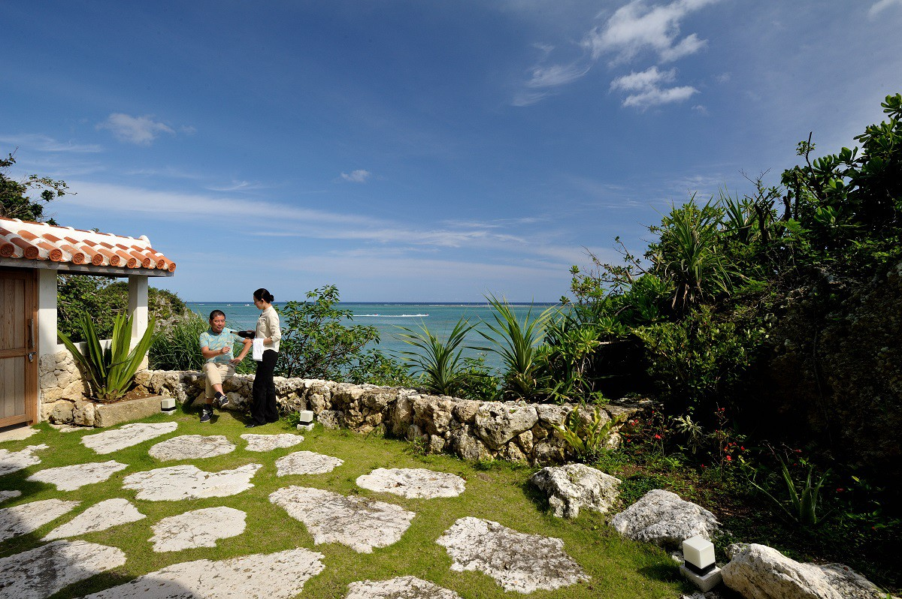
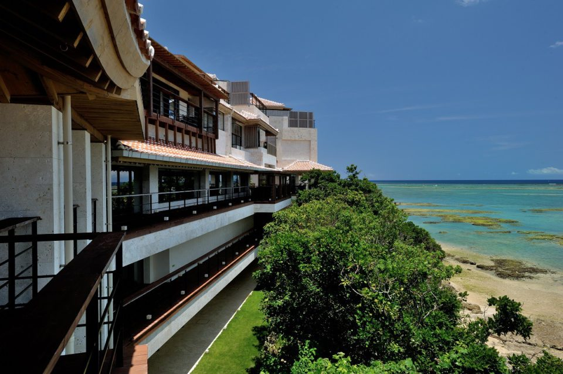
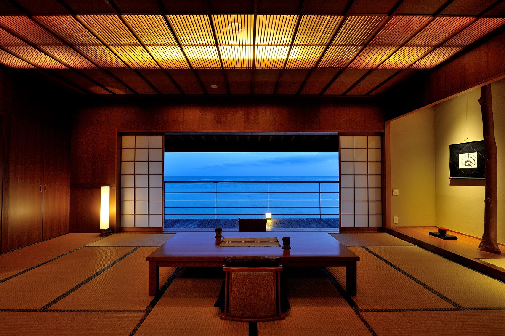
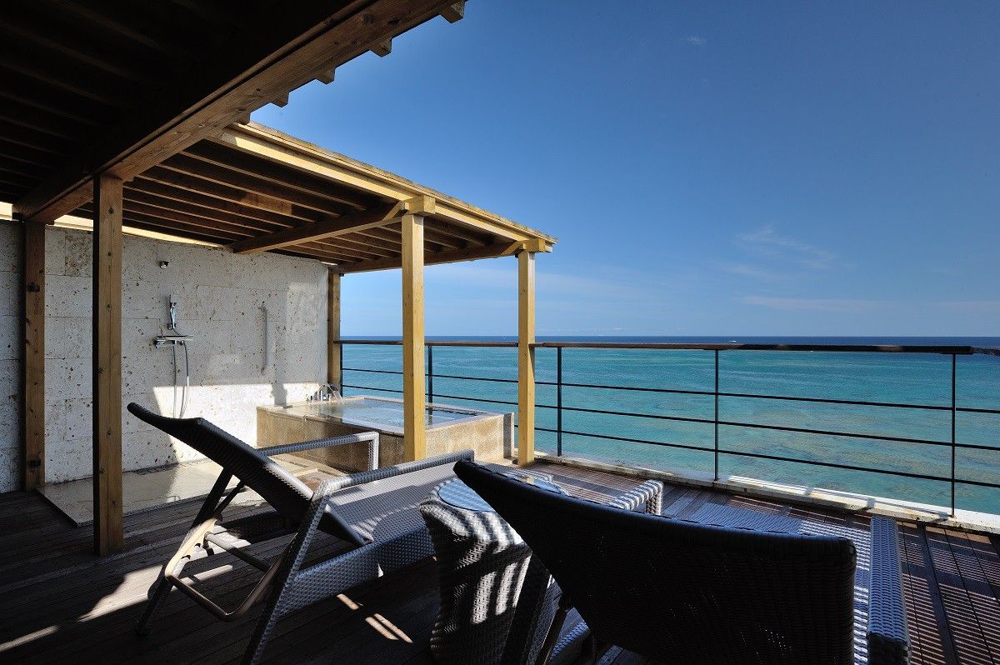
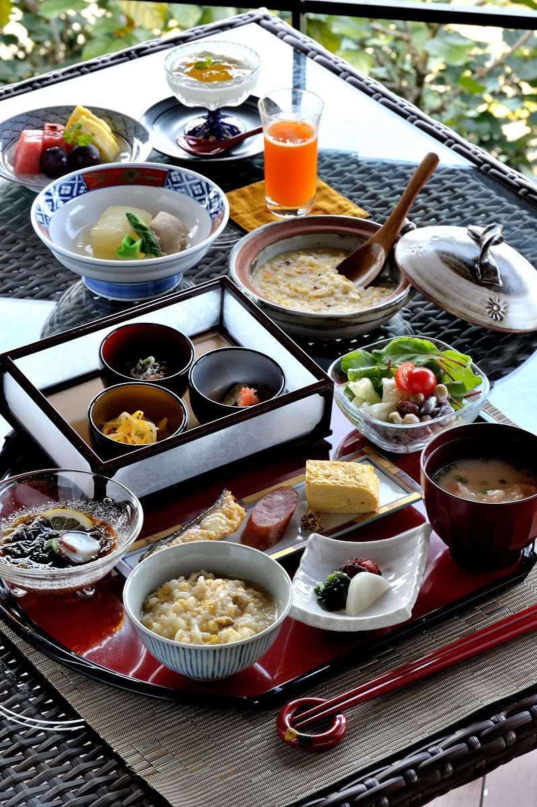
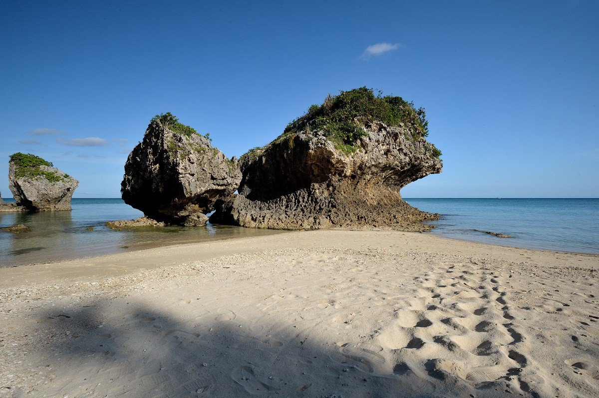

Префектура Окинава · Нандзё · гостиница
Hyakuna Garan: рюкюская гостиница с душой японского рёкана на юге Окинавы

Окинаву обычно представляют как сверкающие пляжные курорты с бассейнами и коктейлями. Hyakuna Garan на юго-восточном побережье острова Окинава устроена иначе: рюкюская культура соединена здесь со спокойным качеством японского рёкана.
Мечта
Какой гостиницы не хватало Окинаве
Нашего автора тянет на Окинаву при любой возможности, и не только летом: весной, осенью и даже зимой здесь хочется просто побыть в свободном, лёгком воздухе. Любимые отели у него на острове есть, но много лет он мечтал о двух вещах сразу.
Слово «окинавская гостиница» у большинства вызывает одну и ту же картину. С балкона номера видно море, у бассейна пьют тропический коктейль через соломинку, от жгучего солнца прячутся под белым зонтом. Ради этого на Окинаву и едут, и в такой картине нет ничего плохого.

Первая мечта касалась самого жилья: уйти от однотипных курортов и найти на Окинаве место с тишиной и вкусом японского рёкана. Вторая касалась вида. Автору всегда нравилось не западное побережье центра и севера острова, где стоит большинство курортов, а восточный берег юга. Когда он услышал, что появилась гостиница, которая исполняет обе мечты сразу, поверить было трудно.
Место
Мыс напротив острова Кудака
Гостиница называется Hyakuna Garan («Хякуна гаран»). Она стоит в городе Нандзё на юге острова Окинава, совсем рядом с кафе «Хамабэ-но тяя», которое автор очень любит. От аэропорта Наха сюда около получаса на машине.

Добравшись до места, автор какое-то время просто молчал. Перед ним лежало море, и смотреть на него, кажется, лучше всего именно из этого здания, величественного и красивого. Никакие слова не передадут того, что чувствуешь, когда стоишь здесь сам.
Прекрасный вид открывается не только из номеров, но и из всех общих пространств. Интерьер собран из подлинных вещей и материалов, и вместе с видом это даёт редкое ощущение покоя. В гостинице 17 номеров, при каждом есть своя ванна.

Кухня
Японо-рюкюские ужины, которые меняются каждый день
Отдельная причина приехать сюда это кухня. Ужин подают в формате японо-рюкюского кайсэки, и даже если остаться на несколько дней, блюда утром и вечером будут каждый раз другими. Повара не спорят с простой природой Окинавы, но доводят её продукты до большой изысканности.

Утром на пляже у гостиницы автор нашёл следы морской черепахи. Ночью она выходила на берег отложить яйца и вернулась в море.

Смысл
Гостиница с историей королевства
Королевство Рюкю долго было связующим звеном между Японией и остальной Азией, и Hyakuna Garan берёт на себя роль хранителя этой истории. Гостиница тесно связана с объектами всемирного наследия «Гусуку и связанные с ними памятники королевства Рюкю».
Слово «гаран» в названии означает чистое место, где монахи проходят духовную практику. Гостиница носит это имя и соответствует ему, но при этом позволяет и просто наслаждаться отдыхом. Для нашего автора это единственная в своём роде гостиница Окинавы.
Hyakuna Garan
- Адрес
- префектура Окинава, Нандзё, Тамагусуку, Хякуна, Ямаситабару, 1299-1
- Телефон
- +81 98-949-1011
- Номера
- 17 номеров; ужин японо-рюкюский кайсэки, завтрак японский (в обеденном зале или в номере); 6 купален под открытым небом, бесплатные отдельные купальни, ванна в каждом номере; онсэна нет
- Цены / Вход
- от 54 000 иен за ночь с завтраком и ужином, с налогом
- Заезд / выезд
- 14:00 / 11:00
- Как добраться
- около 35 минут на машине от аэропорта Наха
- Сайт
- hyakunagaran.com
Фото: Такуми Мияти.